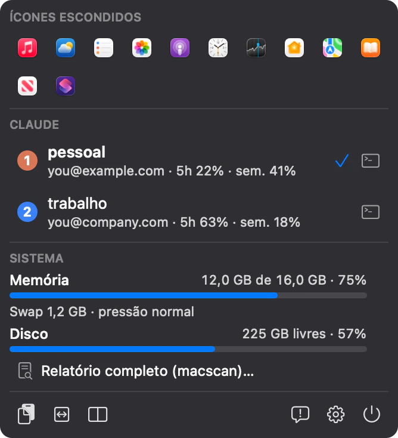
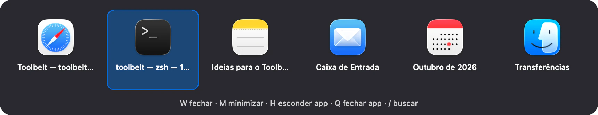
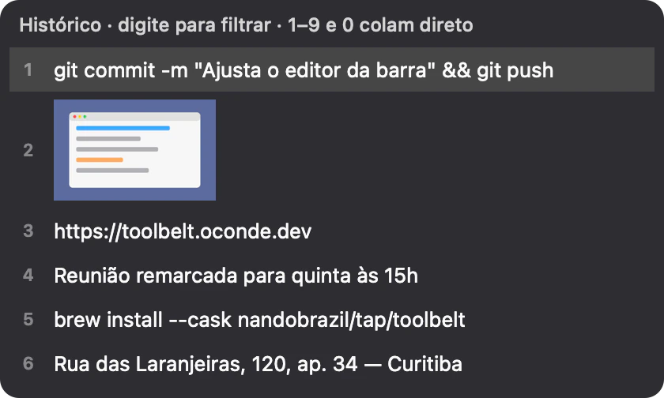
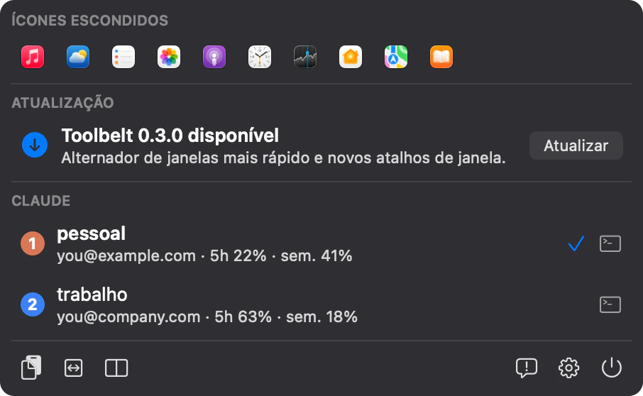

Seis apps da barra de menus viram um só.
O Toolbelt esconde os ícones que não cabem ao lado do notch, alterna entre janelas, guarda o que você copia, encaixa janelas pelo teclado, avisa quando memória e disco apertam e troca de conta do Claude Code. Tudo num processo de uns 15 MB.
Um app só no lugar de um organizador da barra, um alternador de janelas, um histórico da área de transferência, um gerenciador de janelas, um monitor de RAM e disco e do vai e vem entre contas do Claude Code.
- macOS 14 ou mais novo
- Apple Silicon e Intel
- Notarizado pela Apple
- Código aberto, GPL-3.0

Ícones escondidos
Claude
Sistema
Swap 1,2 GB · pressão normal
Relatório completo do Mac…
O que vem no cinto
Seis módulos que você liga e desliga um a um nas Configurações. Todos os atalhos podem ser trocados.
- Barra de menusÍcones que não cabem vão para um painel abaixo do cinto.
- Alternar janelasTodas as janelas abertas, com busca e ações pelo teclado.
- Área de transferênciaTextos, imagens e prints copiados, prontos para colar.
- JanelasMetades, terços e cantos com atalhos ⌃⌥.
- Monitor do sistemaMemória, swap e disco, com aviso antes de faltar.
- Contas do ClaudeTroca de conta do Claude Code e uso de cada uma.
Alterne entre janelas, não entre apps
Segure ⌥ e aperte ⇥: aparecem todas as janelas abertas, de todos os apps. Solte para trocar. Um toque rápido volta direto para a janela anterior, e ⇧ anda para trás.
Prefere ⌘⇥? Grave esse atalho e o Toolbelt assume o lugar do alternador do macOS enquanto estiver aberto.
- ⌥` mostra só as janelas do app atual.
- Com o painel aberto W fecha a janela, M minimiza, H esconde o app e Q fecha o app.
- / busca pelo título da janela ou nome do app; confirme com ⏎.
- Miniaturas das janelas, se você quiser. Ficam só na memória, no máximo 24.

Como funciona
- Segure ⌥ e aperte ⇥ (ou ⌘⇥, se você gravou esse atalho): aparecem as janelas de todos os apps.
- Aperte ⇥ de novo para avançar, ⇧⇥ para voltar, ou passe o mouse.
- Solte para trocar. Antes disso, W, M, H e Q agem na janela marcada.
Tudo o que você copiou, a um atalho de distância
⌥⌘V abre um painel com os últimos textos, imagens e prints. Escolha com o mouse, com as setas ou pelos números de 1 a 0, e o item é colado no app em que você estava.
- Prints salvos com ⌘⇧3, 4 ou 5 entram sozinhos no histórico.
- Senhas ficam de fora: o que vem de gerenciadores de senha e dos apps que você ignorar nunca é guardado.
- Arquivo diário, se você ligar: um .md por dia com hora e app de origem, e as imagens numa subpasta.
- Do seu jeito: tema, vidro, fosco ou sólido, largura, fonte, cantos e onde o painel abre.

Como funciona
- Segure ⌥⌘ e aperte V em qualquer app.
- Escolha com as setas, pelo número de 1 a 0 ou com o mouse. Digite para filtrar.
- O item é colado no app em que você estava, sem trocar de janela.
Janelas no lugar, sem tirar a mão do teclado
Atalhos ⌃⌥ para encaixar a janela da frente sem tirar a mão do teclado. Metades, terços, dois terços, cantos, centro, tela cheia e troca de monitor, com o espaço entre janelas que você escolher.
- ⌃⌥←Metade esquerda
- ⌃⌥→Metade direita
- ⌃⌥↑Metade de cima
- ⌃⌥↓Metade de baixo
- ⌃⌥UCanto superior esquerdo
- ⌃⌥ICanto superior direito
- ⌃⌥JCanto inferior esquerdo
- ⌃⌥KCanto inferior direito
- ⌃⌥DPrimeiro terço
- ⌃⌥FTerço do meio
- ⌃⌥GÚltimo terço
- ⌃⌥EDois terços à esquerda
- ⌃⌥TDois terços à direita
- ⌃⌥↩Maximizar
- ⌃⌥CCentralizar
- ⌃⌥⌘← ⌃⌥⌘→Outro monitor
Memória e disco à vista, com aviso antes de faltar
RAM em uso, swap e espaço livre no disco aparecem na barra ou no painel do cinto. Quando o disco passa do limite, o swap cresce demais ou a pressão de memória sobe, chega uma notificação, e o ícone fica laranja ou vermelho até a situação normalizar.
- Um aviso por vez: cada alerta aparece uma vez e só volta depois que tudo normalizar.
- Limites seus: por padrão, disco abaixo de 10% livre e swap acima de 4 GB.
- Relatório do Mac com bateria, armazenamento, memória, CPU, processos, segurança e rede. Só roda quando você abre.
Sistema
Swap 3,1 GB · pressão normal
Relatório completo do Mac…
Várias contas do Claude Code, troca num clique
Cada conta mantém o próprio login, e conversas, memória, skills e configurações continuam compartilhadas. O Toolbelt mostra qual conta está ativa, quanto da janela de 5 horas cada uma já usou e quando ela zera.
- Selo colorido por conta, na cor que você escolher, na barra e no painel.
- Terminal preso a uma conta, com um atalho para cada uma.
- Sem login extra: o uso é lido dos arquivos do próprio Claude Code e atualiza quando eles mudam.
Leve, e tudo fica no seu Mac
Um processo no lugar de seis. O Toolbelt reage aos eventos do sistema, como troca de app, arquivo alterado ou horário do próximo reset, em vez de ficar varrendo o Mac, e fica em 0% de CPU quando você não está usando.
Não tem conta nem telemetria. O que você copia, o uso do Claude e os números do sistema não saem do computador. Na internet ele só confere se existe versão nova e, se você deixar, manda o relatório técnico quando fecha por erro.
Atualiza sozinho, quando você mandar
O Toolbelt confere se saiu versão nova. Quando sai, avisa no próprio painel do cinto e numa notificação do sistema. Um clique em Atualizar baixa, troca o app e abre de novo, sem passar pelo navegador.

Instalação
-
Baixe o Toolbelt
O arquivo .dmg traz o app assinado e notarizado pela Apple, então ele abre sem aviso de desenvolvedor desconhecido.
-
Arraste para Aplicativos
Abra o .dmg e arraste o Toolbelt para a pasta Aplicativos.
-
Abra e permita a Acessibilidade
Na primeira vez, ligue o Toolbelt em Ajustes do Sistema › Privacidade e Segurança › Acessibilidade. O cinto aparece na barra de menus.
Prefere o terminal? Com o Homebrew:
brew install --cask nandobrazil/tap/toolbeltPerguntas
O Toolbelt é seguro?
Ele é assinado com Developer ID e notarizado pela Apple: o macOS confere a assinatura antes de abrir e não mostra o aviso de app que não pôde ser verificado. Roda só no seu Mac, sem conta e sem telemetria; relatório de falha só sai com a sua permissão.
É de código aberto?
É. O código do Toolbelt está no GitHub, sob a licença GPL-3.0: você pode ler, compilar e modificar o app. Quem distribuir uma versão modificada precisa publicar o código dela sob a mesma licença.
Já uso outros apps para isso. Preciso desinstalar?
Não precisa desinstalar. Se você já usa outro app para alternar janelas, organizar a barra de menus, encaixar janelas ou guardar o histórico da área de transferência, feche-o e tire do início automático: os atalhos são os mesmos e os dois disputariam a barra.
O Toolbelt usa a internet?
Para ver se existe versão nova e baixá-la quando você pede, e para mandar ao desenvolvedor o que você escolher: um relato ou sugestão que você escreve, e o relatório técnico de uma falha, só com a sua permissão (o app pergunta na primeira vez). Histórico da área de transferência, uso do Claude e números do sistema ficam no Mac.
Dá para usar só alguns módulos?
Dá. Cada módulo liga e desliga nas Configurações, e cada atalho pode ser trocado ou desativado.
Como desinstalo?
Nas Configurações, desligue “Abrir o Toolbelt ao iniciar o Mac”. Depois saia pelo painel do cinto, em Sair do Toolbelt, e arraste o app de Aplicativos para o Lixo. Para apagar também as configurações e o histórico, remova ~/Library/Preferences/dev.oconde.toolbelt.plist e a pasta ~/Library/Application Support/Toolbelt.